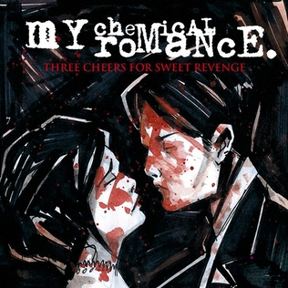
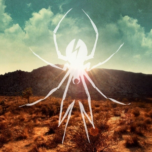

Кожен альбом My Chemical Romance — це не просто збірка пісень, а окрема глава великої історії. Від сирого гаражного звучання до грандіозних рок-опер — простежте еволюцію гурту крізь їхні головні релізи.

Дебютний альбом, записаний лише через кілька місяців після заснування гурту. Це щирий, хаотичний та агресивний запис, пронизаний темами вампіризму, втрати та відчаю. Альбом заклав фундамент для всього майбутнього успіху MCR.

Проривний альбом, який зробив гурт світовими зірками. Це концептуальна історія про «Закоханих-руйнівників» (Demolition Lovers). Чоловік укладає угоду з дияволом: він має принести душі тисячі злих людей, щоб знову побачити свою кохану. Альбом поєднав у собі швидкість панк-року та мелодійність поп-музики.

Магнум опус гурту. Грандіозна рок-опера, що розповідає про персонажа на ім'я «Пацієнт», який помирає від раку і згадує своє життя. Смерть приходить до нього у вигляді параду — найтеплішого спогаду з дитинства. Альбом порівнюють за масштабністю з роботами Queen та Pink Floyd.

Різкий поворот у стилі. Похмурі сукні змінилися на яскраві куртки. Події відбуваються у Каліфорнії 2019 року, де група повстанців (Killjoys) бореться проти деспотичної корпорації Better Living Industries. Музика стала більш драйвовою, з елементами синті-року та танцювальної енергії.